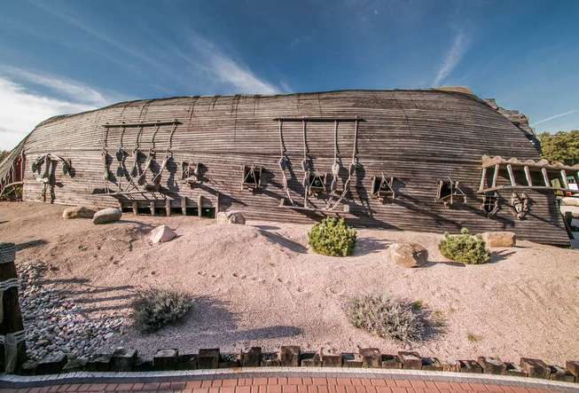
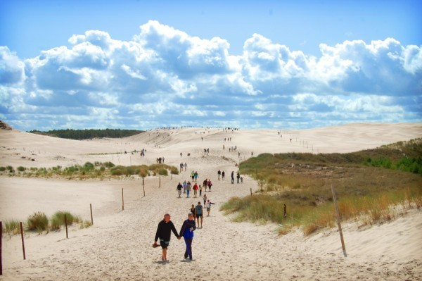
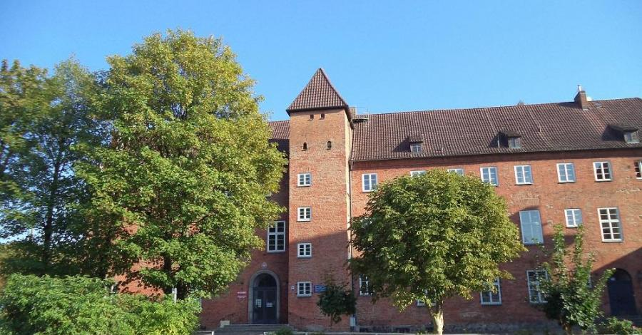

Dane o powiecie
| Siedziba | Lębork |
| Powierzchnia | 707 km² |
| Populacja | 66 333 |
Dane kontaktowe starostwa powiatowego
| Telefon | +48 59 8632 810 |
| Adres | ul. Czołgistów 5 84-300 Lębork |
| Strona | powiat-lebork.com |
Atrakcje turystyczne
Sea Park Sarbsk
Park z pokazami fok i piracką strefą zabaw, a także replikami stworzeń morskich i wraku statku. Pierwszy w Polsce komercyjny Park, gdzie znajdują się foki bałtyckie, uchatki kalifornijskie i kotiki południowo-amerykańskie.
Źródło: seapark.plRuchome wydmy w Słowińskim Parku Narodowym
Największą atrakcją w Łebie są rozległe ruchome wydmy. Wydmy w Słowińskim Parku Narodowym to największy w Europie pas ruchomych wydm. Prawdziwa piaszczysta pustynia znajdująca się na wąskiej mierzei pomiędzy Morzem Bałtyckim a Jeziorem Łebsko. Wiatr sprawia, że wydmy przemieszczają się i osiągają wysokość kilkudziesięciu metrów. Wadą tego zjawiska jest fakt, że zasypują w ten sposób nadmorskie lasy, bagna, a nawet tereny zamieszkane. Największe zmiany w krajobrazie zachodzą jesienią i wiosną podczas sztormów na Bałtyku. Piasek przemieszcza się już przy wietrze, który wieje z prędkością 5 metrów na sekundę.
Źródło: wydmyruchome.plZamek w Lęborku
Zamek krzyżacki w Lęborku pochodzi z XIV wieku. Krzyżacy byli zarówno założycielami grodu jak i budowniczymi zamku. Była to czworokątna warownia z przylegającym do niej domem mieszkalnym. W okresie międzywojennym rozebrano mury obronne, a zamek zaadaptowano na budynek sądu. Dzisiejszy zamek w niewielkim stopniu przypomina pierwotną gotycką budowlę i nadal pełni funkcję głównej siedziby sądu rejonowego.
Źródło: polskieszlaki.pl